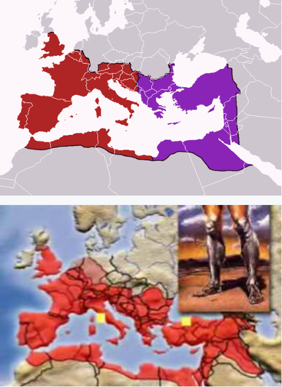
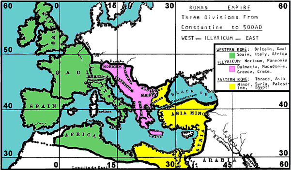
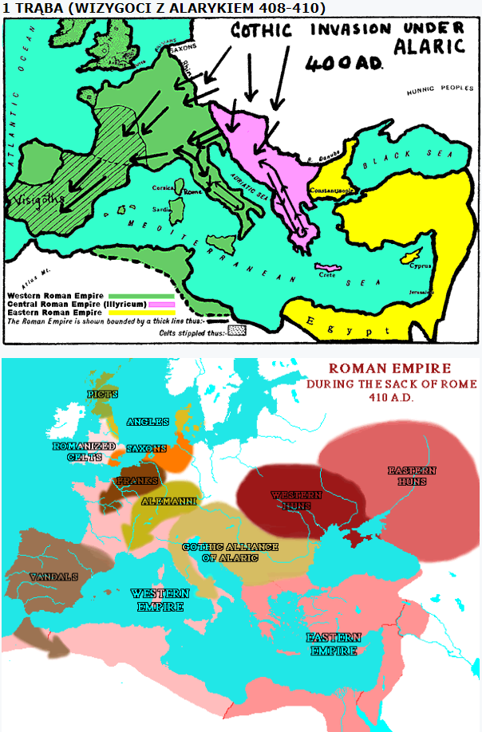

Rozdział 8
„A gdy zdjął siódmą pieczęć, nastało w niebie milczenie na około pół godziny. (2) I widziałem siedmiu aniołów, którzy stoją przed Bogiem, i dano im siedem trąb. (3) I przyszedł inny anioł, i stanął przy ołtarzu, mając złotą kadzielnicę; i dano mu wiele kadzidła, aby je ofiarował wraz z modlitwami wszystkich świętych na złotym ołtarzu przed tronem. (4) I wzniósł się z ręki anioła dym z kadzideł z modlitwami świętych przed Boga. (5) A anioł wziął kadzielnicę i napełnił ją ogniem z ołtarza, i rzucił ją na ziemię. I nastąpiły grzmoty donośne i błyskawice, i trzęsienie ziemi. (6) A owych siedmiu aniołów, mających siedem trąb, sposobiło się do tego, by zatrąbić. (7) I zatrąbił pierwszy. I powstał grad i ogień przemieszane z krwią, i zostały rzucone na ziemię; i spłonęła jedna trzecia ziemi, spłonęła też jedna trzecia drzew, i spłonęła wszystka zielona trawa. (8) I zatrąbił drugi anioł; i coś jakby wielka góra ziejąca ogniem zostało wrzucone do morza; a jedna trzecia morza zamieniła się w krew,. (9) i jedna trzecia zwierząt żyjących w morzu zginęła, a jedna trzecia okrętów uległa zniszczeniu. (10) I zatrąbił trzeci anioł; i spadła z nieba wielka gwiazda płonąca jak pochodnia, i upadła na trzecią część rzek i na źródła wód. (11) A imię gwiazdy tej brzmi Piołun. I jedna trzecia wód zamieniła się w piołun, a wielu z ludzi pomarło od tych wód, dlatego że zgorzkniały. (12) I zatrąbił czwarty anioł; i ugodzona została jedna trzecia słońca, i jedna trzecia księżyca, i jedna trzecia gwiazd, tak iż jedna trzecia ich część zaćmiła się i dzień przez jedną trzecią część swoją nie jaśniał; podobnie i noc. (13) I spojrzałem, i usłyszałem, jak jeden orzeł lecący środkiem nieba wołał głosem donośnym: Biada, biada, biada mieszkańcom ziemi, gdy rozlegną się pozostałe głosy trąb trzech aniołów, którzy jeszcze mają trąbić.” (Objawienie 8:1-13).
Siódma pieczęć.
„Spokój w niebie”, jak wcześniej czytaliśmy, w tym wypadku symbolizuje atmosferę w dominującym mocarstwie, a konkretnie na obszarze Imperium Rzymu.
Między 325, a 395 rokiem panował pozorny spokój. To wydarzenie wprowadza nas do tego, co miało nastąpić niebawem, czyli głosu trąb niszczących Rzym.
Była to cisza przed burzą!
„Z zewnątrz Imperium rzymskie, przez cały okres panowania Konstantyna nigdy nie było poważniej zagrożone” (Dzieje Rzymskie, część 3, Ludwik Piotrowicz, strona 193).
„Energiczni cesarze, sprawujący władzę po Dioklecjanie, byli jeszcze w stanie przez czas jakiś sprawować władzę nad całością Imperium. Wprowadzenie w okresie dominatu silnej władzy centralnej, usprawnianie systemu administracji państwa zdołało na pewien czas przywrócić względny spokój wewnątrz państwa i umocnić nadwyrężony autorytet Rzymu na zewnątrz. Dopiero po śmierci Teodozjusza, od roku 395, podział na część wschodnią i zachodnią utrzymał się na stałe i odtąd losy obu cesarstw toczyły się odmiennymi kolejami.” (Historia starożytna „Kryzys i upadek cesarstwa rzymskiego”).
Modlitwy świętych.
Jehoszua Chrystus był Tym, który najpierw „siebie samego wydał za nas, jako dar i ofiarę Bogu ku miłej wonności.” (Efezjan 5:2).
Wiara w Niego oraz nabranie Jego wiary, umożliwia nam dostęp do Ojca: „Przez niego, więc nieustannie składajmy Bogu ofiarę pochwalną, to jest owoc warg, które wyznają jego imię.” (Hebrajczyków 13:15).
Odtąd, jako odkupione dzieci Boże w Jego Imieniu wznosimy swe ręce i wołamy do Boga.
„i wszystko, cokolwiek czynicie w słowie lub w uczynku, wszystko czyńcie w imieniu Pana Jezusa, dziękując przez Niego Bogu Ojcu.” (Kolosan 3:17).
„Niech wznosi się ku tobie modlitwa moja jak kadzidło, A podniesienie rąk moich jak ofiara wieczorna!” (Psalm 141:2).
Nie zostało napisane, jaka była treść modlitw dzieci Bożych z tamtego okresu, ale były wśród nich zapewne skargi na krzywdę i prześladowania, podobnie jak to miało miejsce w okresie „piątej pieczęci” (Objawienie 6:10), gdyż jak pamiętamy, 28 lutego 380 roku został wydany pierwszy Edykt Teodozjusza:
„My trzej cesarze chcemy, aby nasi poddani trzymali się niezachwianie tej religii, której św. Piotr nauczał Rzymian, która została wiernie zachowywana przez tradycje, i która jest obecnie nauczana przez arcykapłana Damasusa z Rzymu, i Piotra, biskupa z Aleksandrii, męża Apostolskiej świętobliwości, zgodnie z ustanowieniem Apostołów, i nauką Ewangelii. Wierzmy w jedno Bóstwo Ojca, Syna i Ducha Świętego, o jednakim majestacie w Świętej Trójcy. Rozkazujemy, aby zwolennicy tej wiary zostali nazwani Katolickimi Chrześcijanami, piętnujemy wszystkich naśladujących bezsensownie inne religie podłym imieniem "heretycy" i nie pozwalamy, aby ich niekonwencjonalne zgromadzanie się nosiło imię kościoła. Oprócz potępienia przez boski sąd, muszą się liczyć z ciężką karą, którą nasz autorytet, prowadzony niebiańską mądrością, stosownie obmyśli, aby ją odpowiednio nałożyć...".
„Teodozjusz edyktem z 380 roku, wkrótce po objęciu władzy, ogłosił religię katolicką, tak tu po raz pierwszy oficjalnie nazwaną za jedynie prawdziwą i dopuszczalną w państwie, piętnując równocześnie jej przeciwników, jako heretyków, głupców i szaleńców”. (Dzieje Rzymskie, część 3, Ludwik Piotrowicz, strona 209).
Mocą tej ustawy „herezja” stała się przestępstwem ściganym przez państwo.
Prawdziwi chrześcijanie znowu musieli obawiać się o życie.
W 385 roku po raz pierwszy katoliccy biskupi polecili ściąć chrześcijan z powodów wyznaniowych. Miało to miejsce w Trewirze.
Wśród ich modlitw były zapewne również prośby, aby Bóg wyszedł z ukrycia, i położył także kres znieważaniu Jego świętego Imienia, z którego zrobiono bożka w „trójcy”, którego czci się poprzez obrazy i posągi...
„Na skutek nowotestamentowego odstępstwa chrześcijaństwa od Słowa Bożego i Ewangelii Jezusa Chrystusa, nastał okres ciemności duchowej,w której Kościół pogrążał się od czasów Konstantyna. To odstępstwo zostało spowodowane przez pogańską filozofię, która przeniknęła do Kościoła i wyrządziła niewiarygodne spustoszenia i szkody. (A. Mosheim, „Historia Kościoła”).
„Ofiaruj Bogu dziękczynienie I spełnij Najwyższemu śluby swoje! (15) I wzywaj mnie w dniu niedoli, Wybawię cię, a ty mnie uwielbisz!” (Psalm 50:14).
I oto Bóg odpowiada - po ofiarowaniu wonności i modlitw świętych, „anioł” zrzuca na ziemię kadzielnicę pełną rozżarzonych węgli – aniołowie z siedmioma trąbami sposobią się do zatrąbienia.
Upadek Rzymu był przewidziany już za panowania Konstantyna Wielkiego. To on pierwszy zadał cios panującemu na Zachodzie cesarzowi Maksencjuszowi, co zapoczątkowało lawinę zdarzeń, w wyniku, których upadła Zachodnia część Imperium.
Równocześnie z polityczną klęską Rzymu spadają ciosy na odstępcze już wówczas chrześcijaństwo – w latach 395-476 przeżywa ono krwawe najazdy Gotów, Wandalów, Hunów i Herulów, Ostrogotów i Alanów.
7 Trąb.
Instrumenty te były znane i używane w Izraelu. Służyły m.in. „do zwoływania zboru i do zwijania obozu” (4 Mojżesza 10:1-9), zapowiadały uroczyste święta i zgromadzenia Izraela (3 Mojżesza 23:24, 25:9).
Trąby – i jest to rzecz istotna w naszym rozważaniu – były także używane do ostrzegania przed grożącym skądkolwiek niebezpieczeństwem i sygnałem do bitwy: „A gdyby trąba wydała głos niewyraźny, któż by się gotował do boju?” (1 Koryntian 14:8).
W związku z tym u proroka Ezechiela czytamy:
„Synu człowieczy, przemów do swoich rodaków i powiedz im: Gdy sprowadzam na jakiś kraj miecz, a lud tego kraju wybiera jednego męża spośród siebie i ustanawia go swoim stróżem, (3) a ten, widząc, że miecz spada na kraj, zatrąbi na rogu i ostrzeże lud, (4) i ktoś usłyszy wyraźnie głos trąby, lecz nie przyjmie przestrogi, i miecz spada i porywa go, to krew spada na jego własną głowę. (5) Głos trąby usłyszał, ale nie przyjął przestrogi, dlatego jego krew spadnie na niego samego, lecz ten, który przestrzega, uratuje swoją duszę.”(Ezechiela 33:2-5).
U proroka Amosa również:
„Rzucę ogień na Moab, aby strawił pałace Kerijjot. I zginie Moab we wrzawie, wśród zgiełku przy głosie trąby.” (Amosa 2:2).
U proroka Jeremiasza, jak wyżej:
„O, jak mi smutno, jak mi smutno! Wiję się z bólu. O, ściany serca mego! Moje serce jest zaniepokojone, nie mogę milczeć, bo głos trąby słyszysz, moja duszo, zgiełk wojenny! (20) Klęska następuje po klęsce; cały kraj jest spustoszony; znienacka zostały zniszczone moje namioty, w mgnieniu oka moje zasłony. (21) Jak długo mam patrzeć na chorągiew, słyszeć głos trąby?” (Jeremiasza 4:19-21).
„Siedmiu kapłanów nieść będzie przed Skrzynią siedem trąb z baranich rogów. W siódmym dniu zaś obejdziecie miasto siedem razy, a kapłani będą trąbić na baranich rogach. (5) A gdy będą przeciągle trąbić na baranich rogach i wy usłyszycie głos trąb, niech cały lud wzniesie głośny okrzyk bojowy. Wtedy mur miasta rozpadnie się w miejscu, a lud wkroczy do niego, każdy prosto przed siebie.” (Jozuego 6:4-5).
„Oto Ja wystąpię przeciwko tobie, góro zniszczenia - mówi Pan - która zniszczyłaś całą ziemię; i wyciągnę moją rękę przeciwko tobie, i strącę cię ze skał, i zamienię cię w górę płonącą. (27) Podnieście sztandar na ziemi, zadmijcie na rogu między narodami, wyznaczcie przeciwko niemu narody, wezwijcie przeciwko niemu królestwa Ararat, Minni i Aszkenaz, wyznaczcie przeciwko niemu dowódcę! Sprowadźcie rumaki jak włochatą szarańczę” (Jeremiasza 51:25-27).
„Zadmijcie na rogu”, „wyznaczcie przeciw niemu narody” - podobnie jak Bóg postąpił z Jerychem oraz ze starożytną potęgą światową Babilonem, tak samo postąpił z potęgą, którą był Rzym. Te same wydarzenia i klęski są opisane w księdze Objawienia, kiedy to przy głosie trąb ginie Imperium rzymskie…
„Najazdy plemion barbarzyńskich dokonujące się w związku z tzw. wielką wędrówką ludów. Około 375 r. zaczął się na terenach Europy wielki ruch różnych plemion wywołany najazdem z głębi Azji koczowniczych plemion mongolskich zwanych Hunnami. Zdążając systematycznie na zachód spychali oni plemiona barbarzyńskie, które szukać będą ziem do osiedlenia się na terenie Imperium Rzymskiego. Kolejni cesarze potężniejącej z każdym rokiem nawale nie byli w stanie skutecznie się przeciwstawić. Przekonała o tym dobitnie rozegrana w 378 r. bitwa pod Adrianopolem, w trakcie, której zgromiona została przez Wizygotów rzymska armia. Po tej klęsce, która przyprawiła o śmierć samego cesarza, siły militarne państwa rzymskiego nigdy nie zdołały się już w pełni odrodzić. Kolejne lata obfitują, zatem w militarne klęski. W 410 r. Wizygoci zdobyli i złupili Rzym. W 451 r. Rzymianie ponieśli z rąk Hunnów ciężką porażkę na terenie Galii. W 455 r. Rzym zostaje ponownie zdobyty i zniszczony, tym razem przez Wandalów. Niemożność obrony granic imperium, a co za tym idzie położenia skutecznej tamy ruchom migracyjnym plemion barbarzyńskich powodowała, że w V wieku cesarstwo rzymskie na zachodzie zaczęło się rozpadać na poszczególnepaństwa okupowane przez barbarzyńców.Tradycyjną datą oznaczającą kres istnienia cesarstwa rzymskiego na zachodzie jest rok 476, kiedy jeden z wodzów barbarzyńskich – Odoaker pozbawił władzy cesarza Romulusa Augustulusa.”. (Historia starożytna „Kryzys i upadek cesarstwa rzymskiego”).
„uważajcie na głos trąby! Lecz oni odpowiedzieli: Nie będziemy uważali. (18) Dlatego słuchajcie, narody, i uważajcie, pasterze ich trzód! (22) Tak mówi Pan: Oto nadchodzi lud z ziemi północnej i wielki naród rusza z krańców ziemi.” (Jeremiasza 6:17-18, 22).
Obszar, na którym grzmiały trąby.
W 395 roku nastąpiło podzielenie cesarstawa na:
- Zachodnią (Honoriusz),
- Wschodnią (Arkadiusz).

„Czwarte królestwo będzie mocne jak żelazo, bo żelazo wszystko kruszy i łamie; i jak żelazo, które kruszy, tak i ono wszystko skruszy i zdruzgocze. (41) A że widziałeś nogi i palce po części z gliny, a po części z żelaza, znaczy, że królestwo będzie rozdzielone, lecz będzie miało coś z trwałości żelaza, jak widziałeś żelazo zmieszane z ziemią gliniastą.” (Daniela 2:41).
Powtarzające się wyrażenie „trzecia część” lub „jedna trzecia” ma związek z trójetapowym rozpadem Imperium rzymskiego:
1. Część zachodnia wraz z Rzymem padła pod naporem wojsk Ottokara w 476 roku - pierwsze cztery trąby.
2. Części azjatyckie i afrykańskie zostały podbite przez Arabskich Mahometan w VII wieku - piąta trąba.
3. Cesarstwo Wschodnie, które oddzieliło się od Rzymu w 395 roku zostało podbite przez Tureckich Mahometan w 1453 roku - szósta trąba.
Za każdym razem był to obszar stanowiący pewną część pierwotnego obszaru Cesarstwa Rzymskiego. Trzeba też dodać, że zgodnie z ówczesnym podziałem Imperium, można było rozróżnić:
1. Zachodnią część, z Rzymem, jako jego centrum.
2. Rdzeń greckiego świata, obejmujący bałkański półwysep i Azję Mniejszą, z Konstantynopolem, jako jego centrum.
3. Orientalna część, obejmująca Syrię, Palestynę i Egipt, z Aleksandrią, jako jego centrum.

Pierwsza trąba.
„I zatrąbił pierwszy. I powstał grad i ogień przemieszane z krwią, i zostały rzucone na ziemię; i spłonęła jedna trzecia ziemi, spłonęła też jedna trzecia drzew, i spłonęła wszystka zielona trawa” (8:7).
Ziemia - czyli pewien obszar (zgodnie z wizją Daniela, dotyczącą potęg światowych - ostatnią miał być Rzym, który też owego czasu zajmował 1/4 znanego wówczas świata).
Drzewa i trawa symbolizuje tu miasta i ludzi:
„Przez usta swoich posłańców bluźniłeś Panu i mówiłeś: Z mnóstwem moich rydwanów Dotarłem na najwyższe góry, do krańców Libanu I ściąłem rosłe jego cedry, wyborowe jego cyprysy, Wstąpiłem na najwyższy jego szczyt, do najgęstszego lasu. (24) Ja kazałem kopać i piłem cudze wody, Ja też wysuszę stąpaniem moich stóp wszystkie strumienie Egiptu. (25) Czy nie słyszałeś od dawna, że to Ja uczyniłem, Od pradawnych czasów to ustanowiłem, Co teraz do skutku doprowadziłem, Że ty zamieniasz w kupy gruzów miasta warowne, (26) Mieszkańcy ich zaś, bezsilni, strwożyli się i zmieszali, Stali się jak zioła polne, jak świeża ruń, Jak trawa na dachach, spalona, zanim wyrośnie.” (2 Królewska 19:23-26).
„Trawa usycha, kwiat więdnie, gdy wiatr Pana powieje nań. Zaprawdę: Ludzie są trawą!” (Izajasza 40:7).
„Gdyż wszelkie ciało jest jak trawa, a wszelka chwała jego jak kwiat trawy. Uschła trawa, i kwiat opadł” (1 Piotra 1:24).
„Moje serce krzyczy nad Moabem, jego uchodźcy mkną aż do Soar, do Szeliszijja Eglat. Tak! Drogą wzwyż na Luchit idą z płaczem.Tak! W drodze na Choronaim podnoszą krzyk nad zagładą. (6) Tak! Wody Nimrim pustoszeją. Tak! Uschła trawa, znikły zioła, nie ma zieleni.” (Izajasza 15:5-6).
Grad w Izajasza 28:17 niszczy schronienie zła:
„I uczynią prawo miarą, a sprawiedliwość wagą. Lecz schronienie kłamstwa zmiecie grad, a kryjówkę zaleją wody”.
W Ezechiela 13:11, 13, 15-16, grad symbolizuje zniszczenie efektu pracy fałszywych proroków.
Grad i Ogień najtrafniej porównując, niszczy potęgę Asyryjską:
„I odezwie się Pan swoim potężnym głosem, i ukaże ciosy swojego ramienia w zapalczywości gniewu i w płomieniu pożerającego ognia, wśród burzy i ulewy, i ciężkiego gradu. (31) Bo głosem Pana przerazi się Asyria, gdy On rózgą uderzy.” (Izajasza 30:30-31).
Ogień symbolizuje gniew Boży:
„Nuże, wy wszyscy, którzy przechodzicie drogą, spójrzcie i patrzcie: Czy jest ból równy mojemu bólowi, który mnie zadano, którym dotknął mnie Pan w dniu zapalczywości swojego gniewu? (13) Z wysoka zesłał ogień do moich kości i on przeniknął je, rozciągnął sieć na moje nogi, zawrócił mnie; spustoszył mnie, uczynił na zawsze chorym.” (Treny 1:12-13).
Wreszcie „grad i węgle ogniste” w Pslamie 18, użyte są w kontekście karania wrogów ludu Bożego:
„Z blasku przed nim występowały obłoki jego, Grad i węgle ogniste. (14) I zagrzmiał Pan na niebiosach, A Najwyższy wydał głos swój... grad i węgle ogniste.(18) Wyratował mię od potężnego nieprzyjaciela I od nienawidzących mnie, bo byli mocniejsi ode mnie” (Psalm 18:13-14, 18).
Również na Egipt spada grad zmieszany z ogniem (2 Mojżesza 9:24), plewy zostają spalone ogniem (Mateusza 3:12), nasz Bóg jest Ogniem Trawiącym (Hebrajczyków 12:29).
„I zatrąbił pierwszy”.
W księdze Objawienia 8:7 opisane zostało wielkie spustoszenie, jakie nawiedziło wielki obszar Imperium Rzymu na skutek najazdów zachodnich Gotów (Wizygoci) pod dowództwem Alaryka, a następnie północnych plemion germańskich (Ostrogotów, Wandalów, Germanów) dowodzonych przez krwawego Radagejza.
Rzym, stolica potężnego i dumnego państwa, stał się po raz pierwszy od ponad 600 lat łupem barbarzyńców i pastwą płomieni.
„Nagle, o północy, przeraźliwy głos gotyckich trąb zbudził zniewieściałych Rzymian ze snu. Miasto opanował strach. Po kilku dniach bogata stolica świata stała się miastem żebraków. Zrabowano kosztowności, z domów buchały kłęby dymu i płomienie ognia, a gotyccy wojownicy dumnie paradowali po mieście nawieszawszy na sobie rozmaite ozdoby i damską biżuterię. Niewiasty i panny pogwałcono, mężowie i bracia leżeli pozabijani na ulicach, a ci, którym udało się przeżyć, błąkali się po kraju jak żebracy. Wyglądało to tak, jakby Rzym w tych dniach odbierał pomstę za niezliczone okrucieństwa, jakich się dopuszczał przez całe stulecia nad narodami, na skutek swej tyranii i żądzy ziemi…” (Spener, „Historia Światowa”, tom III, strona 48).
To Alaryk był tym nieszczęściem, gdy spadł na Rzym niby jastrząb, pustosząc Bałkany i Italię, obszar stanowiący 1/3 obszaru Cesarstwa Rzymskiego.
Wydarzenie to szeroko opisał angielski historyk Gibbon:
„… W roku 408 wyruszył Alaryk ponownie do Italii i rozbił swój obóz pod murami Rzymu. W okresie 619 lat siedziba państwa nigdy nie została naruszona przez nieprzyjaciela.
Lecz teraz tysiące mieszkańców Rzymu umarło w swoich domach lub na ulicy, wskutek braku żywności. Odór wydobywający się z dużej ilości rozkładających się ciał niepogrzebanych trupów, zarażał powietrze w całym mieście. […] O północy otworzono cichaczem bramę Salaryjską i przeraźliwy szczęk broni i głos gotyckich trąb zbudził śpiących mieszkańców. 1163 lat po założeniu Rzymu, cesarskie miasto, które podbiło i zcywilizowało tak znaczną część rodzaju ludzkiego, zostało wydane nieokiełznanej wściekłości Germanów i Scytów (24 sierpień 410 roku). […] Na skutek udręczeń, jakie spadły na Rzym i Italię, rozpierzchli się jej mieszkańcy po najdalszych zakątkach i pustkowiach, szukając schronienia.” (Rozdział XXXIII).
„Alaryk ruszył jesienią 408 roku na Rzym. Wygłodzone skutkiem oblężenia miasto, które wówczas po raz pierwszy od czasu najazdu Gallów widziało pod swymi murami barbarzyńców, aby się uchronić przed zajęciem, złożyło najeźdźcom olbrzymi okup.Alaryk powtórzył to z końcem 409 roku. Po raz trzeci rzucił się na Rzym, który po krótkim oblężeniu skutkiem braku środków żywności musiał się poddać barbarzyńcom 24 sierpnia 410 roku. W całym ówczesnym świecie fakt ten wywarł wstrząsające wrażenie. Sfery pogańskie dopatrywały się w tym kary bogów za odstępstwo od wiary przodków” (Dzieje Rzymskie, część 3, Ludwik Piotrowicz, strona 218).
Wydarzenia te i całą tragedię już współcześni rozumieli i przyjmowali, jako karę zesłaną przez Boga.
Dla przykładu Hieronim, ówczesny wielki autorytet kościelny, pisał:
„Od dwudziestu lat i więcej, leje się codziennie rzymska krew na przestrzeni międzyKonstantynopolem a Alpami Julijskimi. Przez Scylię, Trację, Macedonię, Dardanię, Dację, Achaję, Epir, Dalmację i całą Panonię przeciągają hordy Gotów, Sarmatów, Kwadów, Alanów, Hunów,Wandalów, pustosząc i plądrując. Ileż to zacnych niewiast i Bogu poświęconych panien, i to ze szlacheckich i wysokich rodów, stało się igraszką tych dzikich bestyj. Biskupów pobrano do niewoli, kapłanów pomordowano, kościoły zburzono, ołtarze zamieniono na żłoby końskie, a kości męczenników powyrzucano z grobów. Wszędzie smutek i narzekanie, i obraz okrutnej śmierci. […] Wali się rzymski okrąg świata, a jednak nie chcemy ugiąć naszych dumnych karków. […]Już od dłuższego czasu odczuwamy gniew Boży na sobie, a jednak nie staramy się Go ubłagać. Nasze grzechy przydają siły barbarzyńcom, a nasze występki są powodem klęsk wojsk rzymskich, a jak gdyby nie było dość, przyłączają się jeszcze wewnętrzne walki domowe, które są gorsze od miecza nieprzyjacielskiego. Nieszczęśliwi byli Izraelici, w porównaniu, z którymi Nabuchodonozor został nazwany sługą Bożym; nieszczęśliwi jesteśmy i my, którzyśmy ściągnęli na siebie niezadowolenie Boże, tak, iż gniew Jego szaleje przeciwko nam, w postaci rozjuszonych barbarzyńców.” („Do Heliodora”, rozdział XVI i XVII).
Niestety, biadając i narzekając na sądy Boże, oficjalny kościół nie zmienił swego stanowiska w sprawach najważniejszych, nadal szerzyło się bałwochwalstwo – zmieniły się jedynie imiona czczonych bożków. Nadal celebrowali pogańskie święta, tyle, że pod chrześcijańskimi nazwami, i dalej kłaniali się obrazom, posągom i bożkom o imionach świętych.
Kościół w drodze synkretyzmu przyjmował kolejne pogańskie wierzenia, praktyki i bóstwa, oddając im boską cześć. To przecież już w omawianym okresie wprowadzono wiele zmian w nauce chrześcijańskiej:
- wprowadzono dogmat trójcy,
- ustanowiono modlitwy za umarłych,
- zmieniono przykazania,
- wprowadzono święcenie niedzieli,
- ustalono dogmat o oddawaniu czci aniołom,
- wprowadzono mszę („ofiara bezkrwawa”),
- w miejsce kultu bogini Diany wprowadzono kult „Bogurodzicy” (theotokos), itp. itd.
Kościół ten, z chrześcijańskiego stając się powszechnym (katolickim), prześladował tych, którzy pozostali wierni Bożej Prawdzie objawionej w Piśmie Świętym.
Żądza władzy i zachłanność hierarchów oraz duchowy kompromis uczyniły z oficjalnego chrześcijaństwa religię pogańską. Przyznaje to nawet niejaki kardynał J.H.Newman, pisząc:
„(…) świątynie, kadzidło, świece, ofiary, woda święcona, święta, procesje, błogosławienie pól, szaty kapłańskie, habity, rzeźby i obrazy mają pogańskie korzenie”.
1 TRĄBA (WIZYGOCI Z ALARYKIEM 408-410)

Zobacz ciąg dalszy w CZĘŚCI 2 Rozdziału 8
https://mojabiblia.github.io/j/36.html
↞ Spis treści
kopia strony: https://jehoszua.ddv.pl/readarticle.php?article_id=35 Wszelkie prawa autorskie należą się autorowi tej strony
zaff1b8d628z